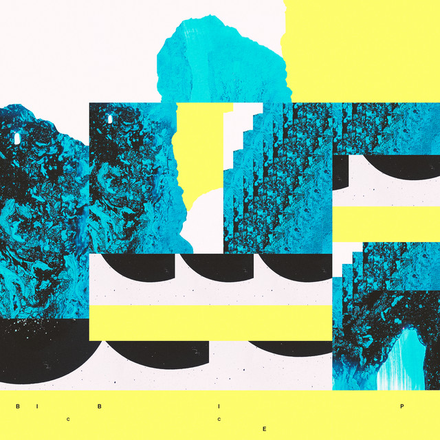

Bicep - Bicep



Información del álbum facilitada por discogs.com:
Fecha de lanzamiento: 2017
Géneros: Electronic
Estilos: House, Techno, Trance
Tracklist:
Orca 4:34
Glue (feat. Silkie Carlo) 4:29
Kites 6:26
Vespa 1:27
Ayaya 3:36
Spring (feat. Ghulam Mohammed & Kaifi Azmi & Lata Mangeshkar) 6:55
Drift (feat. Amy Spencer) 4:55
Opal 4:31
Rain (feat. Jaidev & Madan Mohan & Sahir Ludhianvi & Lata Mangeshkar) 5:51
Ayr (feat. Amy Spencer) 5:00
Vale (feat. Rosie Lowe) 4:57
Aura 5:17